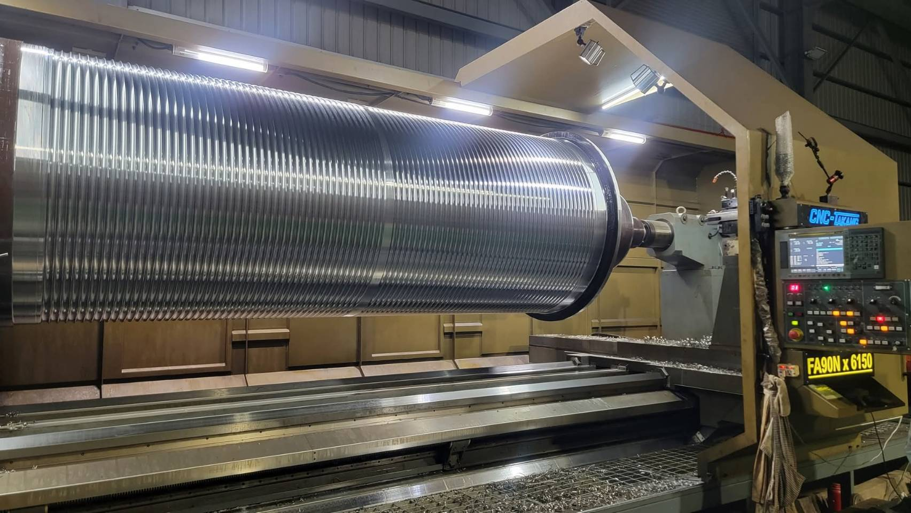

CNC 車床加工
透過車削形成工件輪廓與表面。從軸心、鋼索捲筒，到天車輪與法蘭，可在實際紀錄中觀看不同工件的加工細節。

工件與加工重點
軸心、鋼索捲筒、天車輪及法蘭，是佑鎰加工紀錄中展示過的工件類型。各工件的加工方式，依圖面及實際需求討論。
透過車削形成工件輪廓與表面。從軸心、鋼索捲筒，到天車輪與法蘭，可在實際紀錄中觀看不同工件的加工細節。

軸心、鋼索捲筒、天車輪及法蘭，是佑鎰加工紀錄中展示過的工件類型。各工件的加工方式，依圖面及實際需求討論。